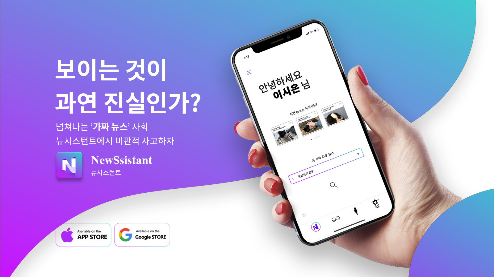
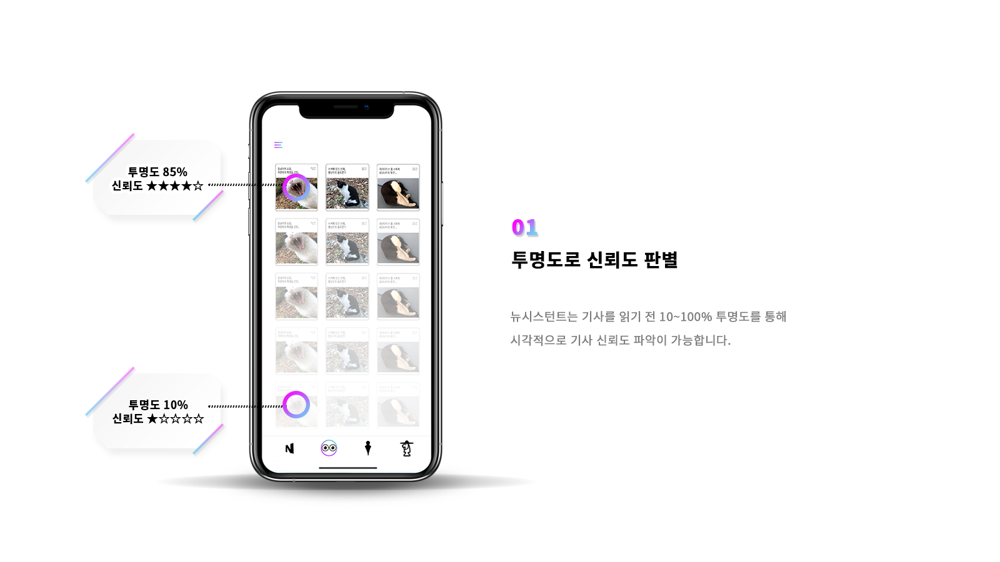
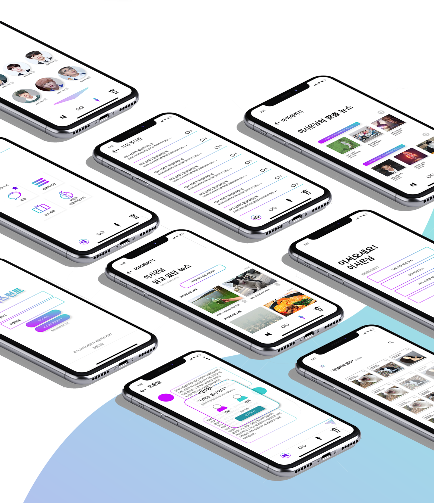

가짜뉴스를 판별해주는 "뉴시스턴트"
▼아래 베너를 클릭하시면 뉴시스턴트 기획서를 확인하실 수 있습니다.▼

가짜뉴스가 판을 치는 21세기 현대 미디어 시대에,
우리는 흔하게 가짜 정보에 노출이 됩니다.
그런 가짜가 활기치는 이 사회에서 좀 더 비판적인 사고를 가지고
정보나 기사들을 바라봐야하는데,
그 비판적 사고를 돕기 위해
"뉴시스턴트"를 만들게 되었습니다.
"뉴시스턴트"의 서비스 4가지



"뉴시스턴트" 영상
